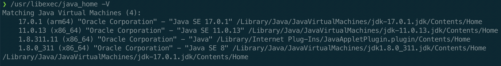

Multiple Java setup on macOS
There are different ways to setup multiple Java versions on a macOS e.g. you could use sdkman or jEnv but in this post I will show you how to do it without using any of these tools.
-
Open a terminal and type
/usr/libexe/java_home -V.This will show you all the currently installed JVMs on your machine. In my case I have 3 JVMs installed: 
-
If you want to install more JVMs then install from https://www.oracle.com/java/technologies/downloads/. Note: You will have to create an account to install older versions like JDK 8 or 11.
-
Open your your
~/.bash_profileor~/.zshrcand enter the following (ofcourse for these may differ based on what java versions you have decided to use):alias java17="export JAVA_HOME=$(/usr/libexec/java_home -v17)" alias java11="export JAVA_HOME=$(/usr/libexec/java_home -v11)" alias java8="export JAVA_HOME=$(/usr/libexec/java_home -v1.8.0)" -
Now restart the terminal or source the config file and type
java17to setJAVA_HOMEto version 17 or typejava8to set it to version 8 etc.
{kind=link}